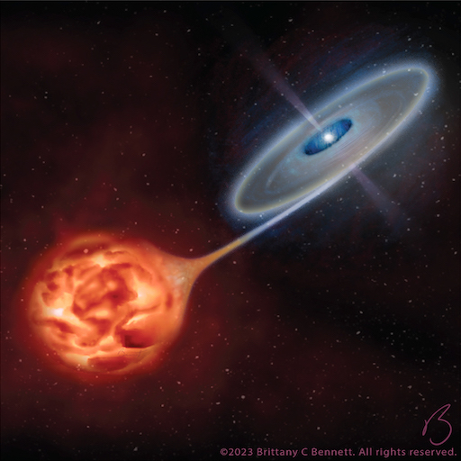
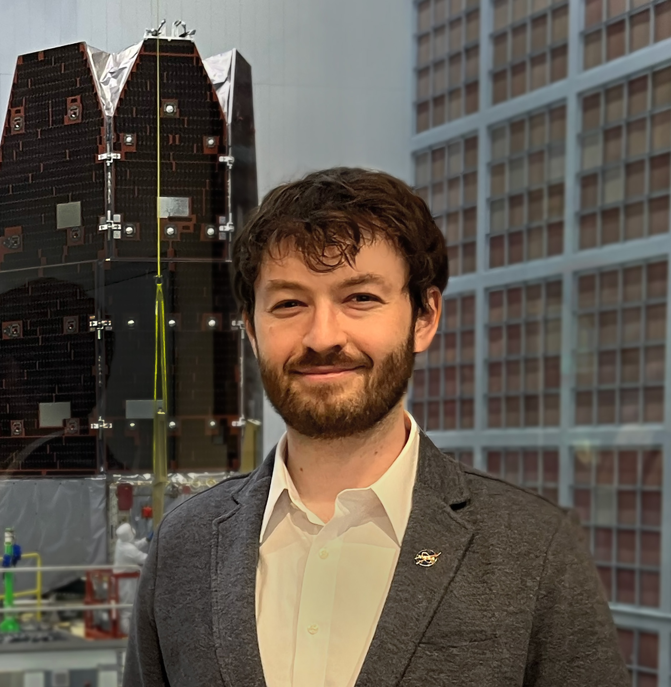
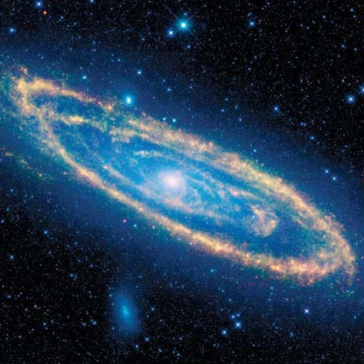
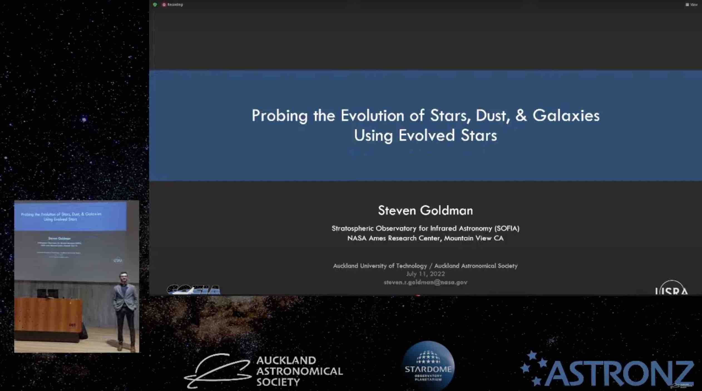
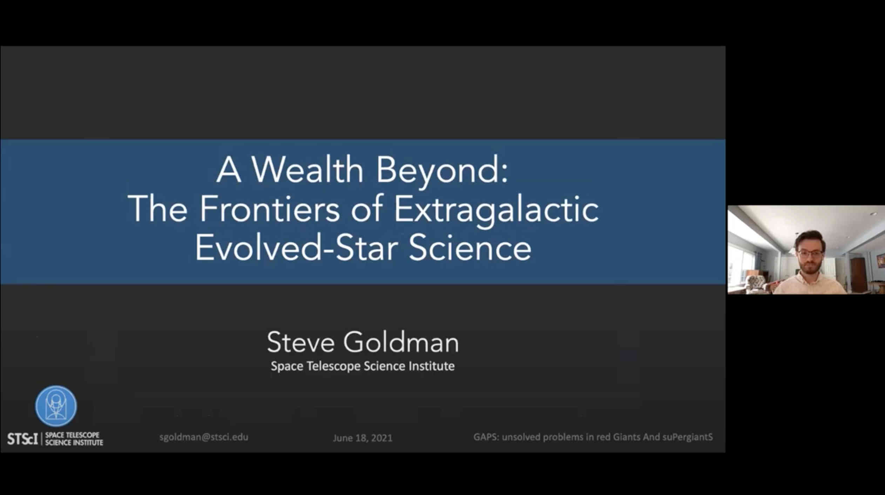
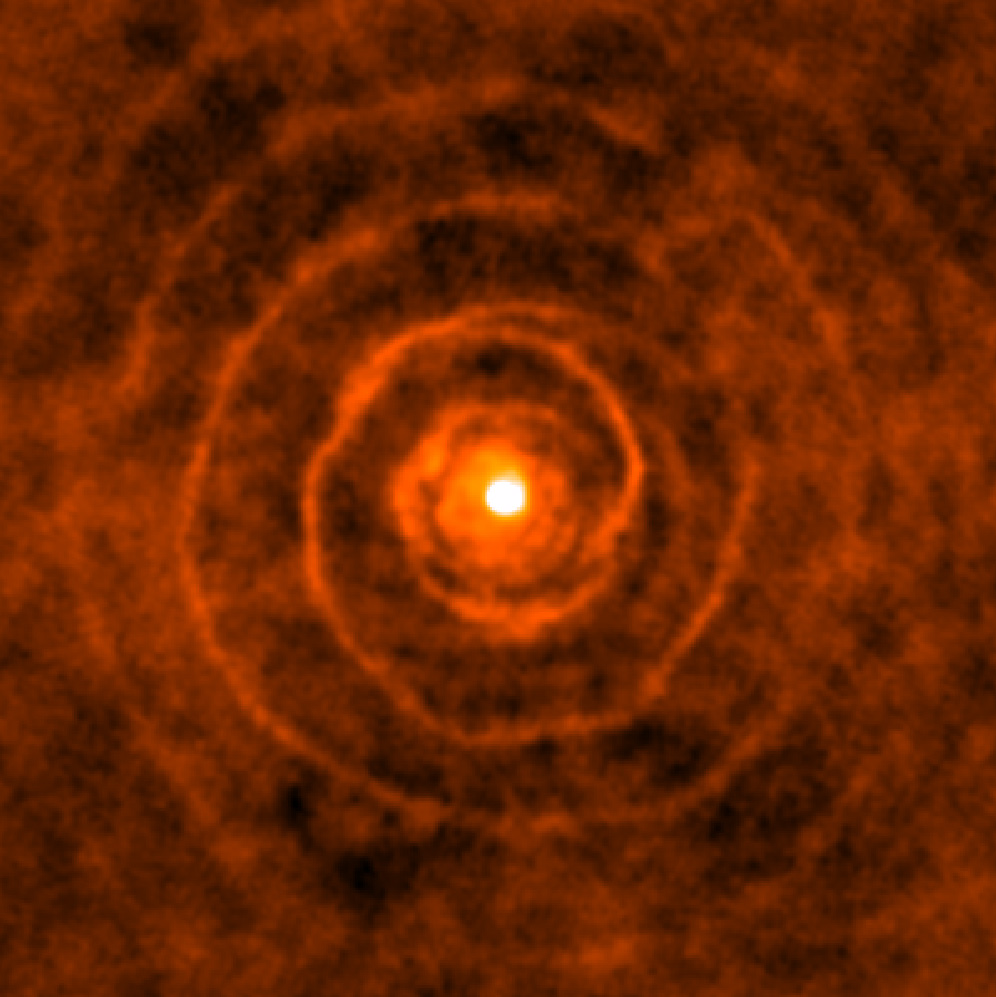

HM Sagittae
An in-depth study of one of the nearest symbiotic systems that recently underwent a nova-like outburst. We use four instruments on SOFIA and Hubble and find a rapid return to pre-novae behaviour.
Link to Press Release!
I am an Astrophysicist and Software Engineer at the Space Telescope Science Institute (STScI). Originally from Syracuse, NY, I earned my B.S. in Physics from St. Lawrence University and my Ph.D. in Astrophysics from Keele University in England. After four-years as a postdoctoral fellow at STScI within the Interstellar Medium group, I worked as an Instrument and Observatory Scientist for the Stratospheric Observatory for Infrared Astronomy (SOFIA). I now work as a Software Engineer at STScI while continuing my research.
As a researcher, I study the late evolutionary stages of Asymptotic Giant Branch (AGB) stars—sun-like stars nearing the ends of their lives. These stars shed vast amounts of gas and dust, returning up to 85% of their mass to the interstellar medium. By observing them across radio, infrared, and optical wavelengths, I investigate how they enrich galaxies with the raw materials that ultimately form new stars, planets, and even life itself.
As a science software engineer, I maintain calibration software for both the Hubble and James Webb Space Telescopes. I also serve as the Hubble Calibration Pipeline Lead, ensuring that the hundreds of terabytes of Hubble data are constantly updated, calibrated, and ready for discovery.
CV
An in-depth study of one of the nearest symbiotic systems that recently underwent a nova-like outburst. We use four instruments on SOFIA and Hubble and find a rapid return to pre-novae behaviour.
Link to Press Release!
The most-complete sample of AGB stars in a metal-rich galaxy to date. Includes 346,623 newly identified AGB candidates and an estimate of their impact on the global dust budget of the galaxy.

New Zealand

Global, Remote
Conference Link
